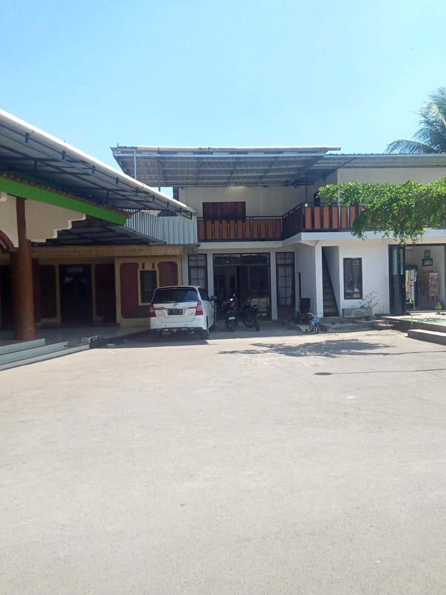
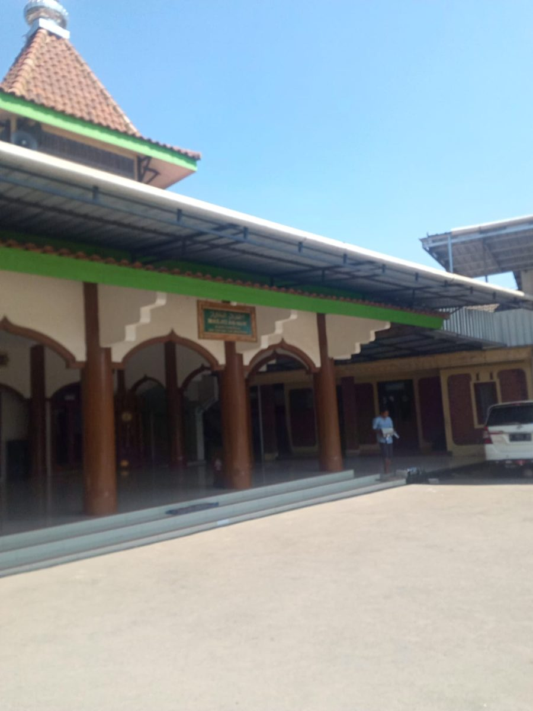

المعهد الإسلامي السلفي النور
Pondok Pesantren An-Nur
An-Nur, An-Nurrr!!! UYEE 🤙🤙
Ayo mondok, pesantrenku keren. Pesantren putra dan putri di Candirejo, Tuntang, Semarang.
Daftar santri baru- Putra dan putriSantri laki-laki dan perempuan
- Madin berjenjang4 Ibtida' sampai 3 Tsanawi
- Candirejo, TuntangSemarang, Jawa Tengah
Profil
Sejarah singkat
Visi
Mencetak santri yang berilmu, berakhlak mulia, dan bermanfaat bagi masyarakat.
Misi
- Mengkaji kitab kuning secara bertahap lewat madrasah diniyah.
- Membiasakan sholat berjamaah dan membaca Al-Qur'an.
- Menumbuhkan akhlak lewat amaliah harian, mingguan, dan tahunan.
- Mengabdi kepada masyarakat, misalnya yasinan bersama warga.
Program pendidikan
| Jenjang | Kitab yang dikaji |
|---|---|
| 4 Ibtida' | Sabrowi, Mabadi Fiqih, Yanbu'a, Aqidatul Awam |
| 1 Tsanawi | Jurumiyah, Qowaidul I'lal, Safinah, Fathul Manan, Ta'lim Muta'alim |
| 2 Tsanawi | Imrithi, Riyadhul Badi'ah, Hadits |
| 3 Tsanawi | Alfiyah, Fathul Qarib, Jawahirul Kalamiyah |
Kegiatan santri
Fasilitas dan galeri


Kontak dan pendaftaran
Lokasi
Klego RT 03 RW 09, Candirejo, Tuntang, Semarang, Jawa Tengah.
Hubungi pengurus
Putra: 081555984716
Putri: 082225677203
Persyaratan
- Mengisi formulir pendaftaran
- Fotokopi KK, KTP, dan Akta
- Pas foto berwarna 3x4 (1 lembar)
- Membayar uang pendaftaran
Biaya
- Pendaftaran: Rp 40.000
- Kas bulan pertama: Rp 10.000
- Syahriyah bulanan: Rp 250.000
- Uang gedung: Rp 350.000
Mengacu pada brosur PSB tahun ajaran 2025/2026. Biaya bisa berubah, tanyakan ke pengurus.